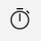
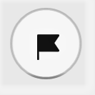
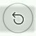
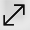

Stopwatch
Stopwatch can be used to measure the amount of time that elapses between its activation and deactivation.
To start stopwatch:
- Click the Stopwatch icon  on the left navigation toolbar.
- Click the Start icon to start the stopwatch.
- Click the laps icon  to view the time laps/splits.
- Click the reset button  to reset the stopwatch.
- Click the expand icon  to expand the stopwatch.
- Click the Keep on Top icon
 to keep the stopwatch In a movable mini window over your screen.
to keep the stopwatch In a movable mini window over your screen.